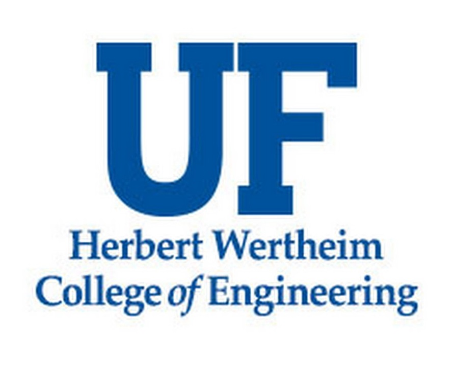

About

I recently completed a Bachelor's degree in Mechanical Engineering from the University of Florida. During my studies, I found a great interest in projects that involve both mechanical engineering and computer science. I am now actively seeking full-time job opportunities in my field after graduation.
Education

University of Florida
B.S. in Mechanical Engineering
Minor in Computer and Information Science Engineering
Expected to Graduate May 2023
Universidad Carlos III Madrid
Studied abroad during the Spring 2022 semester in Madrid
Completed 3 Mechanical Engineering Courses and 1 Computer and Information Science Course
Experience
Mechanical Engineering Intern
RND Automation
May 2022 - August 2022
Designed and assembled web slitter machine to help employees modify film for testing customer machines during debug phase
Created new form for engineering change notices that automatically creates requisitions for procurement department
Worked in combination with engineering lead to modify medical assembly machine according to change order from customer

Research Assistant
Herbert Wertheim College of Engineering
Mar 2020 - May 2022
First authoring research paper that details a smart home system that controls and monitors energy consumption and output based on real time data to maximize efficiency
Using MATLAB and Python to run simulations on modeled homes with real world data to analyze controller productivity
Support Technician
Warrington College of Business
Dec 2019 - Present
Provide in-person and on-demand technical support throughout the business school for hardware, software and network issues
Field user queries by phone and online submitted tickets, utilizing remote access to resolve problems
Notable Projects
Bioreactor Shaker Table (Capstone Project)
Led design and assembly on machine that takes rolls of film and cuts to a specified length by the operator then rerolls the film
Presented project in layout and design review to engineering team
Created multiple custom parts and modified sub assemblies to achieve necessary functions in machine
Canisterized CubeSat Dispenser
Led design and assembly on machine that takes rolls of film and cuts to a specified length by the operator then rerolls the film
Presented project in layout and design review to engineering team
Created multiple custom parts and modified sub assemblies to achieve necessary functions in machine
Web Slitter Machine
Led design and assembly on machine that takes rolls of film and cuts to a specified length by the operator then rerolls the film
Presented project in layout and design review to engineering team
Created multiple custom parts and modified sub assemblies to achieve necessary functions in machine
Ball Retreival and Release Robot
Collaborated to design, analyze, and evaluate a proposal for a robot that navigated a course and retrieved tennis balls
Design process required bi-weekly meetings, evaluation matrices, and a complete Solidworks assembly of robot
Functional features include gripping onto tennis balls on a multilevel stand, transferring them to a holding container on the robot, and then releasing the balls into a bucket
View Project Report
Design and 3D Creation of Motorized Basketball Hoop
Identified and proposed a solution to a problem with two other students that had all aspects of the mechanical design process present
Personally contributed to overall concept design and specifically the gear system, bearings, shafting, and solidworks simulations
Project provided great perspective on the workings of an extremely detailed and thorough project for something that seems simple from first glance
View Project Report
Proposal for Smart Capability in Campus Restrooms
Worked in group to brainstorm a recommendation to improve safety and efficiency on campus by adding smart sensors in campus bathrooms
Collected data and conducted background research to determine the outcome smart sensors would have on the school
Proposed that adding a smart sensor into frequented bathrooms on campus would enhance employee planning and safety on campus
View Project Report
Technical and Economic Analysis of Middle of the Market Aircraft
Collaborated with group to analyze over 40 current commercial air crafts and determine a gap in the market based on technical and economic factors
Proposed economic and technical aspects of a middle of the market aircraft including interior and exterior dimensions, maximum takeoff weight, engine type, and cost per available seat mile
View Project Report
Notable Projects
- BioReactor Shaker Table (Capstone Project)
- Canisterized CubeSat Dispenser
- Web Slitter and Re-Roller
- Ball Reetrieval and Release Robot
- Design and 3D Creation of Motorized Basketball Hoop
- Proposal for Smart Capability in Campus Restrooms
- Technical and Economic Analysis of Middle of the Market Aircraft
Collaborated with team to design, prototype, and assemble a shaker table that met that customer needs
Customer needs included IPX-5 certification, capable of reaching 350 RPM on linear, orbital and double orbital patterns, and optical density/fluorescent intensity sensing
Authored all software for the user interface and co-developed electrical schematic and circuit board
View Project Report
Project 2 Info goes here.
Project 3 Info goes here.